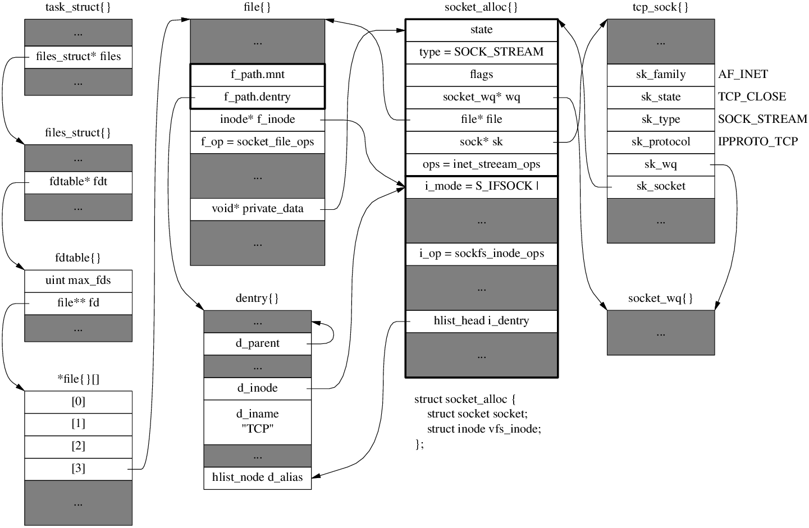

File Descriptor Table
// include/linux/sched.h
struct task_struct {
// ...
/* open file information */
struct files_struct *files;
// ...
};
// include/linux/fdtable.h
struct fdtable {
unsigned int max_fds;
struct file __rcu **fd; /* current fd array */
unsigned long *close_on_exec;
unsigned long *open_fds;
unsigned long *full_fds_bits;
struct rcu_head rcu;
};
/*
* Open file table structure
*/
struct files_struct {
/*
* read mostly part
*/
atomic_t count;
bool resize_in_progress;
wait_queue_head_t resize_wait;
struct fdtable __rcu *fdt;
struct fdtable fdtab;
/*
* written part on a separate cache line in SMP
*/
spinlock_t file_lock ____cacheline_aligned_in_smp;
unsigned int next_fd;
unsigned long close_on_exec_init[1];
unsigned long open_fds_init[1];
unsigned long full_fds_bits_init[1];
struct file __rcu * fd_array[NR_OPEN_DEFAULT];
};
// include/linux/fs.h
struct file {
union {
struct llist_node fu_llist;
struct rcu_head fu_rcuhead;
} f_u;
struct path f_path;
struct inode *f_inode; /* cached value */
const struct file_operations *f_op;
// ...
atomic_long_t f_count;
// ...
/* needed for tty driver, and maybe others */
void *private_data;
#ifdef CONFIG_EPOLL
/* Used by fs/eventpoll.c to link all the hooks to this file */
struct list_head f_ep_links;
struct list_head f_tfile_llink;
#endif
};
struct socket{}
// include/linux/net.h
struct socket_wq {
/* Note: wait MUST be first field of socket_wq */
wait_queue_head_t wait;
struct fasync_struct *fasync_list;
unsigned long flags; /* %SOCKWQ_ASYNC_NOSPACE, etc */
struct rcu_head rcu;
} ____cacheline_aligned_in_smp;
/**
* struct socket - general BSD socket
* @state: socket state (%SS_CONNECTED, etc)
* @type: socket type (%SOCK_STREAM, etc)
* @flags: socket flags (%SOCK_NOSPACE, etc)
* @ops: protocol specific socket operations
* @file: File back pointer for gc
* @sk: internal networking protocol agnostic socket representation
* @wq: wait queue for several uses
*/
struct socket {
socket_state state;
kmemcheck_bitfield_begin(type);
short type;
kmemcheck_bitfield_end(type);
unsigned long flags;
struct socket_wq __rcu *wq;
struct file *file;
struct sock *sk;
const struct proto_ops *ops;
};
// include/net/sock.h
struct socket_alloc {
struct socket socket;
struct inode vfs_inode;
};
// include/linux/fs.h
struct inode {
umode_t i_mode; // S_IFSOCK | S_IRWXUGO;
unsigned short i_opflags;
kuid_t i_uid;
kgid_t i_gid;
unsigned int i_flags;
// ...
const struct inode_operations *i_op;
struct super_block *i_sb;
// ...
unsigned long i_ino; // sockfs_dname: "socket:[%lu]"
// ...
union {
struct hlist_head i_dentry;
struct rcu_head i_rcu;
};
// ...
};
socket(2)
int sys_socket(int family, int type, int protocol)
-> struct socket* sock_create(family, type, protocol)
-> __sock_create(family, type, protocol)
-> struct socket* sock = sock_alloc()
-> inode = new_inode_pseudo(super_block of sockfs) // fs/inode.c
-> alloc_inode
-> sock_alloc_inode (sb->s_op->alloc_inod)
-> socket_alloc *ei = kmem_cache_alloc(sock_inode_cachep) // 306B
-> socket_wq *wq = kmalloc(sizeof(*wq)) // 24B
ei->socket.wq = wq;
ei->socket.state = SS_UNCONNECTED;
-> inode_init_always
sock = SOCKET_I(inode);
inode->i_op = &sockfs_inode_ops; // .listxattr = sockfs_listxattr,
-> net_families[family]->create(sock, protocol)
-> inet_create(sock, protocol) // net/ipv4/af_inet.c
-> sock_map_fd()
-> get_unused_fd_flags
-> sock_alloc_file
-> d_alloc_pseudo // sizeof(struct dentry) == 128
-> file = alloc_file(..., &socket_file_ops); // sizeof(struct file) == 140
-> get_empty_filp
file.f_op = &socket_file_ops
sock->file = file;
file->private_data = sock;
-> fd_install
inet_create(sock, protocol)
-> find inet_protosw for sock->type & protocol
-> struct sock* sk = sk_alloc()
-> sk_prot_alloc -> kmem_cache_alloc (tcp_prot is 1360B)
-> sock_init_data
sk->sk_socket = sock;
sock->sk = sk;
-> sk->sk_prot->init(sk)
-> tcp_v4_init_sock
-> tcp_init_sock
-> tcp_init_xmit_timers
-> tcp_prequeue_init
-> tcp_enable_early_retrans
-> tcp_assign_congestion_control
sk->sk_state = TCP_CLOSE;
icsk->icsk_af_ops = &ipv4_specific;
After socket()

Memory usage
On x86-64 Deiban 8, Linux 3.16, /proc/slabinfo
| struct | size | slab cache name |
|---|---|---|
file |
256 | "filp" |
dentry |
192 | "dentry" |
socket_alloc |
640 | "sock_inode_cache" |
tcp_sock |
1792 | "TCP" |
socket_wq |
64 | "kmalloc-64" |
inet_bind_bucket |
64 | "tcp_bind_bucket" |
tcp_request_sock |
256 | "request_sock_TCP" |
inet_timewait_sock |
192 | "tw_sock_TCP" |
epitem |
128 | "eventpoll_epi" |
Total : 2944 bytes/socket, not including send/receive buffers. For client sockets, +64B for inet_bind_bucket.
net_proto_family
| family | type | protocol |
|---|---|---|
| AF_UNIX=1 | SOCK_STREAM=1 | 0 |
| AF_UNIX | SOCK_DGRAM=2 | 0 |
| AF_INET=2 | SOCK_STREAM | IPPROTO_TCP=6 |
| AF_INET | SOCK_DGRAM | IPPROTO_UDP=17 |
| AF_INET | SOCK_DGRAM | IPPROTO_ICMP=1 |
| AF_INET | SOCK_RAW=3 | IPPROTO_IP=0 |
| NPROTO=AF_MAX=41 | SOCK_MAX=11 | no max? |
// include/linux/net.h
// How to create a socket for an address family
struct net_proto_family {
int family; // AF_INET, AF_UNIX, AF_INET6, etc. must: 0 <= family < NPROTO
int (*create)(struct net *net, struct socket *sock, int protocol, int kern);
struct module *owner;
};
// net/socket.c
static const struct net_proto_family *net_families[NPROTO];
// net/ipv4/af_inet.c
static int inet_create(struct net *net, struct socket *sock, int protocol, int kern);
static const struct net_proto_family inet_family_ops = {
.family = PF_INET,
.create = inet_create,
.owner = THIS_MODULE
};
// inet_init() calls sock_register():
net_families[AF_INET] = &inet_family_ops;
inet_protosw
// include/net/protocol.h
/* This is used to register socket interfaces for IP protocols. */
struct inet_protosw {
struct list_head list;
/* These two fields form the lookup key. */
unsigned short type; /* This is the 2nd argument to socket(2). eg. SOCK_STREAM, SOCK_DGRAM */
unsigned short protocol; /* This is the L4 protocol number. eg. IPPROTO_TCP, IPPROTO_TCP */
struct proto *prot;
const struct proto_ops *ops;
unsigned char flags; /* See INET_PROTOSW_* below. */
};
#define INET_PROTOSW_REUSE 0x01 /* Are ports automatically reusable? */
#define INET_PROTOSW_PERMANENT 0x02 /* Permanent protocols are unremovable. */
#define INET_PROTOSW_ICSK 0x04 /* Is this an inet_connection_sock? */
// net/ipv4/af_inet.c
/* The inetsw table contains everything that inet_create needs to
* build a new socket.
*/
static struct list_head inetsw[SOCK_MAX];
static DEFINE_SPINLOCK(inetsw_lock);
/* Upon startup we insert all the elements in inetsw_array[] into
* the linked list inetsw.
*/
static struct inet_protosw inetsw_array[] =
{
{
.type = SOCK_STREAM,
.protocol = IPPROTO_TCP,
.prot = &tcp_prot,
.ops = &inet_stream_ops,
.flags = INET_PROTOSW_PERMANENT | INET_PROTOSW_ICSK,
},
{
.type = SOCK_DGRAM,
.protocol = IPPROTO_UDP,
.prot = &udp_prot,
.ops = &inet_dgram_ops,
.flags = INET_PROTOSW_PERMANENT,
},
{
.type = SOCK_DGRAM,
.protocol = IPPROTO_ICMP,
.prot = &ping_prot,
.ops = &inet_dgram_ops,
.flags = INET_PROTOSW_REUSE,
},
{
.type = SOCK_RAW,
.protocol = IPPROTO_IP, /* wild card */
.prot = &raw_prot,
.ops = &inet_sockraw_ops,
.flags = INET_PROTOSW_REUSE,
}
};
#define INETSW_ARRAY_LEN ARRAY_SIZE(inetsw_array)
// inet_init()
sock_register(&inet_family_ops);
/* Register the socket-side information for inet_create. */
for (struct list_head *r = &inetsw[0]; r < &inetsw[SOCK_MAX]; ++r)
INIT_LIST_HEAD(r);
for (struct inet_protosw *q = inetsw_array; q < &inetsw_array[INETSW_ARRAY_LEN]; ++q)
inet_register_protosw(q);
After Initialization:

skbuff
A sample of receive skb for TCP SYN segment: